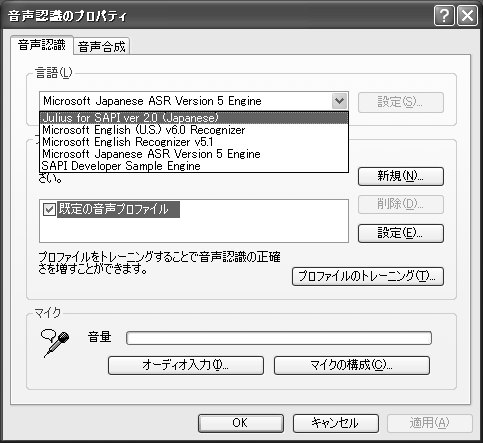
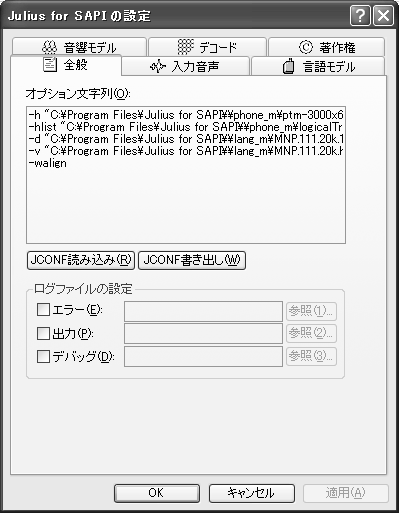

Julius
for SAPI ver 2.3 README
- 2004/02/05 ver 2.3
- 2003/07/23 ver 2.2c
- 2003/07/01 ver
2.2b
- 2003/03/20 ver 2.2
- 2003/01/11 ver 2.1d
- 2002/10/22 ver 2.1c
- 2002/10/15 ver 2.1b
- 2002/09/12 ver 2.1
- 2002/07/28 「音声入力の確認」「SALTについて」追加
- 2002/07/01 ver 2.0
|
京都大学 学術情報メディアセンター 河原研究室
住吉貴志
松本曜
(C) 1991-2004 Kyoto University
(C) 2000-2004 Nara Institute of Science and Technology
|
はじめに
Julius for SAPI は、京都大学音声メディア研究室で開発された大語彙連続音声認識エンジン
Julius に、Microsoft社の Speech API(SAPI) ver.5 を実装したものです。Speech API を利用した
Windows アプリケーションから利用することができます。
Julius for SAPI では、Julius を主に次のように拡張してあります。
-
同一音声に対して、1つのプロセス内で複数の音響制約、言語制約を用いて逐次デコードを行う
(注：最新ヴァージョンの Juilus にも同様の機能があります)
-
SAPIの定める文法形式が利用できる(正規文法のみ)
履歴
-
※Julius for SAPI のヴァージョンは、本家 Julius
とは独立してつけられています。
- 2004/02/05 Julius for SAPI ver 2.3 リリース
- class N-gram 形式の辞書ファイルに対応
- エンジンを同一プロセス空間内に複数作った場合に強制終了するバグをフィックス
- バイナリHMMファイルの読み込みに対応(本家でのパッチ)
- ログファイルの拡張子をスレッドIDにしてスレッドごとに出力するオプションを追加
- 出力wavファイルに日付を追加するオプションを追加
- 単語間トライフォンの尤度を上位N個の状態の平均とする機能を追加した(本家でのパッチ)
- 単語接続部での言語スコアの2重計算を修正(本家でのパッチ)
- 2003/07/23 Julius for SAPI
ver 2.2c リリース (バグフィックス ヴァージョン)
-
2003/07/01 Julius for SAPI ver 2.2b
リリース (バグフィックス ヴァージョン)
-
メモリリーク関係のバグをフィックス(まだメモリリークは残っている模様)
-
web上での配布はしていない
-
2003/03/20 Julius for SAPI ver 2.2
リリース
-
Wave2MFCC でオプション値を設定できていなかったバグを修正
-
zlib 1.1.3->1.1.4にUPDATE
-
オプション設定に silB silE を追加
-
オプション設定インターフェース改良
-
リジェクションの実装
-
最小長、最大長制限によるリジェクション
-
信頼度（文スコア尤度比）によるリジェクション
-
CMN 情報の保存（ファイル and/or プロファイル）
-
Spector Subtraction の組み込み
-
2003/01/11 Julius for SAPI ver 2.1d リリース
-
Arpa形式のファイルを読み込めるようにした(今までオプションで指定できたが読み込んでなかった！)
-
大きな文法におけるバッファオーバーフローを修正(DFA.c)
-
Phrase の Alternates に N-best 解を出力
-
Elements.LexicalForm に、単語識別名を出力
-
トップルールの SREngineConfidence に文のビタビスコアを出力
-
単語信頼度の計算と出力
-
「デコード」タブにオプションの追加
| N-bestを計算 |
信頼度 |
失敗判定 |
計算 |
Alt出力 |
単語Confidence値 |
| OFF |
- |
- |
1 |
0 |
音響尤度平均 |
| OFF |
- |
ON |
2 |
0 |
音響尤度平均 |
| ON (n) |
OFF |
OFF |
n |
n-1 |
音響尤度平均 |
| ON (n) |
ON |
OFF |
n |
n-1 |
CM |
| ON (n) |
OFF |
ON |
n |
n-1 |
音響尤度平均 |
| ON (n) |
ON |
ON |
n |
n-1 |
CM |
-
2002/10/22 Julius for SAPI ver 2.1c リリース (バグフィックス ヴァージョン)
-
ErrLogFile にファイル名を指定しないとあらゆるログファイルが記録されないバグを修正
-
再帰を含むDFAの構築時に、認識できないパスが存在していたのを修正
-
第2パスで候補が得られなくて第1パスの結果を最終結果とした場合、文法にマッチしていなくて失敗したときにFalseRecognitionを返すようにした
-
認識結果に音声区間情報を返すようにした
-
2002/10/15 Julius for SAPI ver 2.1b リリース (バグフィックス ヴァージョン)
- ある程度複雑なDFAの構築時に、認識できないパスが存在していたのを修正
- 2段以上の再帰ルールがうまく処理できていなかったのを修正
- ファイル入力に対して CMN を正しく行うようにした
-
- -nostrip 時に 0 音声(MFCCに失敗)をノイズモデルに置き換えるオプションを追加
- -pausesegment オプションを設定、反映できるようにした
- レジストリのエンジン情報(Tokens\Attributes)を修正
- 2002/09/12 Julius for SAPI ver 2.1 リリース(2001年度CSRC CDROM
ヴァージョン)
- 2002/07/01 Julius for SAPI ver 2.0 リリース
Microsoft の .NET Speech に示されている動作環境であれば動作すると思います。メモリは
256MB以上が望ましいです。
開発環境は以下のとおりです。
-
Visual Studio .NET 2003
-
Speech SDK 5.1
-
Windows XP Professional Edition
配布モジュールの説明
-
JuliusSAPIInstaller
Julius for SAPI のDLLファイル(JuliusSAPI.DLL) をインストールし、プログラムが使用するレジストリを初期化します。
-
InitialModelsInstall
Julius for SAPI
で使用できる標準モデルファイルをインストールします。詳細についてはインストールディレクトリに一緒にインストールされるドキュメントを参照してください。Julius
で使用可能な他のモデルを使うこともできます。
インストールと設定方法
1. Microsoft Speech SDK のインストール
お使いのOSが Windows 2000 の場合、あるいは SAPI
アプリケーションを開発する場合は、Microsoft Speech SDK 5.1 のインストールが必要です。
Microsoft 社の Speech.net の Web サイト (
http://www.microsoft.com/speech/
)から
Microsoft Speech SDK 5.1
(68MB)をダウンロードし、使用するコンピュータにインストールします。
2. JuliusSAPI.dll と標準モデルファイルのインストール
JuliusSAPIInstaller
と InitialModelsInstall をそれぞれインストールします。インストールディレクトリは、なるべくデフォルトのもの(C:\Program
Files\Julius for
SAPI\)を使用してください。以降の作業がうまくいかないときはインストールディレクトリをデフォルトにして試してみてください。
注意：インストール中にエラーダイアログが出る場合、「続行」ボタンを押してそのまま続けてください。正常にインストールされます。
3. デフォルトで使用する認識エンジンの設定
コントロールパネルの
"Speech"(あるいは「スピーチ」、「音声認識」など) を開くと、「音声認識のプロパティ」ダイアログボックスが表示されます。
「音声認識」タブの「言語」コンボボックスで、 デフォルト認識エンジンを "Julius for SAPI
ver x.xx (日本語)" に変更します。
これらの項目が見つからない場合は、2. の作業がうまくいってないことが考えられます。
4. 使用する音響モデル、言語モデル、デコードオプション等の設定

音響モデル、言語モデル、デコードオプション等については、インストール時に標準的な設定になっているため、普通は設定する必要はありません。
InitialModelsInstall
をインストールしなかった場合、あるいはモデルを別のものに変えたい場合は、音響モデル、言語モデルの手動設定が必要です。
「音声認識のプロパティ」ダイアログボックスから
「設定」ボタンを選択しますと、右のようなダイアログが表示されます。ここで各種モデルを設定します。
-
「全般」
現在の設定をJCONFファイルに出力したり、JCONFファイルを現在の設定に反映させるできます。また、ログファイル出力の設定もここで行います。
-
「入力音声」
音声区間検出や音響分析のパラメータを指定できます。処理音声の出力先も指定できます。
-
「言語モデル」
ディクテーション時のNgramモデルなどを指定します。
-
「音響モデル」
使用する音響モデルについて設定できます。
-
「デコード」
デコードオプションなどを指定します。
-
「著作権」
著作権について表示されます。
5. 音声入力の確認
最後に、マイクの音声が正しく入力されているかを確認します。入力装置をコンピュータに正しく接続し、「音声認識のプロパティ」ダイアログボックスのマイクの音量ゲージなどで反応を確認してください。(少なくとも全体の1/4ぐらいまで達するようにし、また振り切れないようにマイク入力レベルを調整してください。)
6. アンインストールについて
アンインストールは、コントロールパネルの「アプリケーションの追加と削除」または「プログラムの追加と削除」で行います。
7. アップデートについて
古いバージョンをインストールしているマシンに最新バージョンをインストールする場合、インストール時に設定情報が失われたり、バージョン間でレジストリ情報の格納形式が異なる可能性があります。次のような手順でアップデートしてください。
使用例
SAPI を利用するアプリケーションで Julius for SAPI を使う
正しく設定されておれば、SAPI アプリケーションにおいて Julius for SAPI
が使用されます。(アプリケーションによっては特定のエンジンを利用するようになっていたり、特定のエンジンでなければ動かないようになっている場合もありますので、ご注意ください。)
SAPI アプリケーションは IME パッドの音声入力、Office XP
などがあります。アプリケーションの操作方法はそれぞれのアプリケーションのマニュアルを参照してください。
Julius for SAPI を使ったアプリケーションを作成する
Julius for SAPI は SAPI を実装していますので、SAPI
対応のアプリケーションを作成することになります。SAPIアプリケーションのプログラミングについては、SpeechSDK
付属のヘルプやサンプルプログラムなどを参照してください。
制限事項
-
インスタンスを作成してから最初のコンテキスト作成時に、モデルファイルをメモリにロードするのに数秒の時間がかかります。
-
設定したモデルファイルが不正な場合、ダイアログ等による警告は表示されません。正しいモデルファイルを使用するようにしてください。
-
SAPIのユーザプロファイル、トレーニング、アプリケーション辞書、ユーザ辞書については実装されておりません。
Julius for SAPI の挙動について疑問な箇所があれば
julius@ar.media.kyoto-u.ac.jp までご報告いただけると幸いです。その際はぜひ詳しい状況説明とログファイル(ダイアログで設定可能)をお願いします。
関連リンク